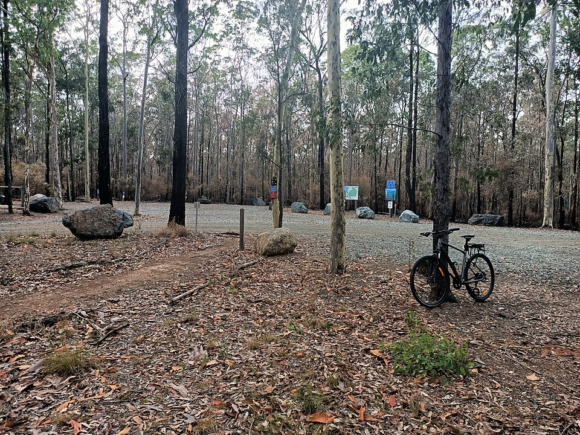
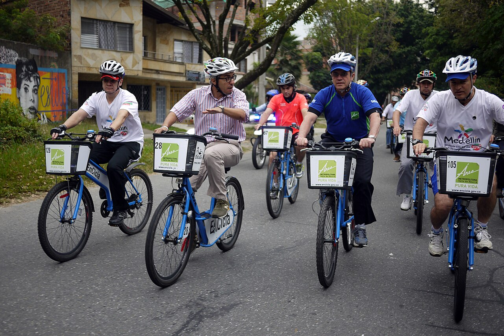
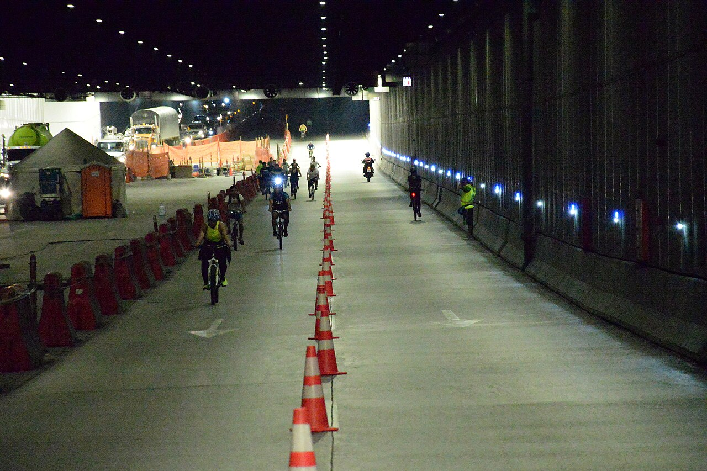

Alquiler de bicicletas
Escoge la bicicleta que mejor se adapte a tu paseo y recorre Medellín a tu ritmo. El alquiler incluye casco y candado para que salgas con lo esencial; la ciudad se siente distinta cuando la recorres sin afán.


Somos un equipo de Medellín que te ayuda a descubrir la ciudad en bicicleta. Ya sea que quieras recorrerla por tu cuenta o con un guía, ven a conocernos en Medellín.
En Rueda Libre creemos que la bicicleta es una forma cercana y divertida de conocer Medellín. Te acompañamos para que elijas una opción cómoda, segura y adecuada para tu plan.
Escoge la bicicleta que mejor se adapte a tu paseo y recorre Medellín a tu ritmo. El alquiler incluye casco y candado para que salgas con lo esencial; la ciudad se siente distinta cuando la recorres sin afán.

Pedalea en compañía de un guía local que te muestra calles, parques y rincones de Medellín. Es una forma tranquila y cercana de conocer la ciudad mientras compartes el camino con otras personas.

Aprende cuidados sencillos para tu bicicleta, como revisar las llantas, ajustar el sillín y reconocer cuándo necesitas ayuda técnica. Te llevas consejos prácticos para disfrutar más seguridad durante el recorrido.
Estamos en Medellín. Escríbenos para conocer el punto de atención y coordinar tu alquiler.
Consultas y reservas: hola@ruedalibre.example